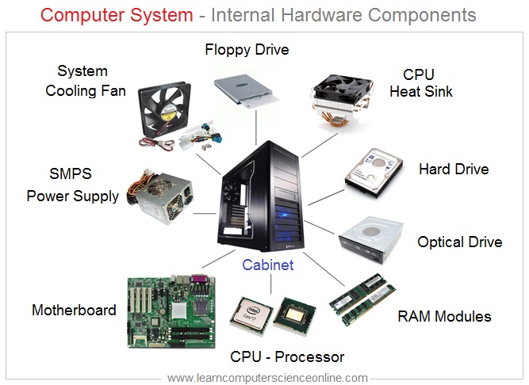

Unit 14 was about computer hardware. In the unit we researched what hardware does in computers and faults that can occur from each part, then we fixed a computer by diagnosing the hardware errors and then solving each hardware error.
In this unit I had learnt how to recognise different POST errors when starting up desktops and how to find and fix hardware errors if any prevent the computer from functioning properly.
Email: 22151811@cambria.ac.uk